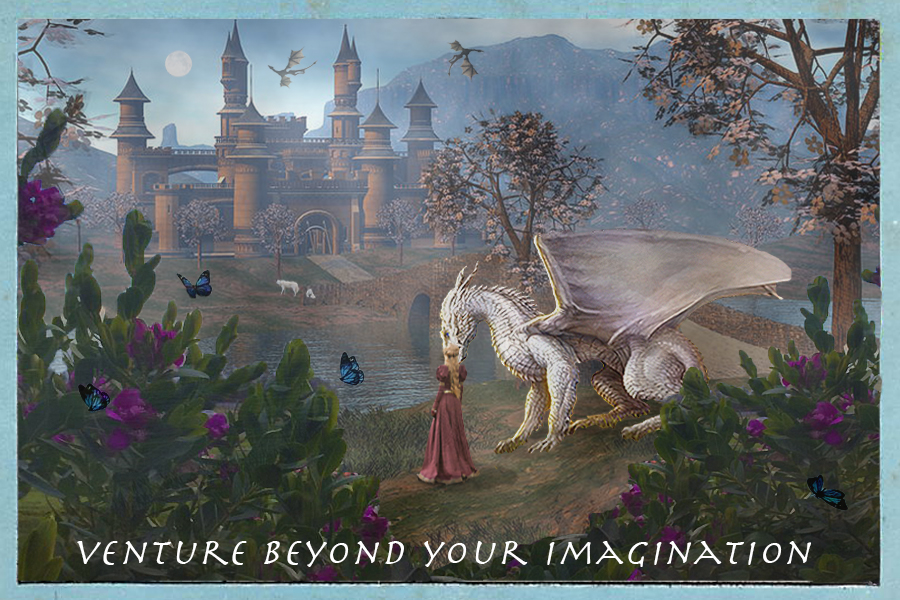

Home | Photoshop | Illustrator | Animate | Indesign | Contact |

For my Raster final project, I wanted to combine medieval with reality. I wanted those who view this image, to feel as if they are hiding behind a bush looking out and feeling like they entered a fantasy world. I purposely made the bush look brighter and realistic compared to what’s around.I used the the magic wand, object selection, and the lasso tool to cut out the images I wanted to use, i.e the girl in the middle, moon, all the dragons, the bush,the wolves in the background, and the butterflies. I also added fog to make the whole picture look more fantasy-like